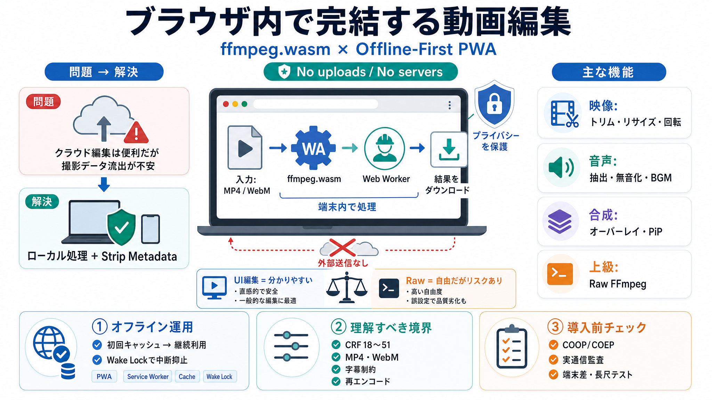

ffmpeg.wasm is not "technically" production ready! #285 - GitHub
The ffmpeg-asm.js doesn't have the security issues but is super slow. If someone wants to try it out I threw up a demo h…

ブラウザ内で完結
ffmpeg.wasm（WebAssembly）を使い、サーバーに動画を送らず端末内で編集できるWebアプリ。
プライバシー重視＋PWAオフライン対応（Offline-First）を前面に出しています。
アップロード不安
クラウド編集は便利ですが、個人の撮影データが外部に渡るリスクがあります。
本プロジェクトは「No uploads, no servers」を核に、ローカル処理に寄せています。
ffmpegを端末へ
ffmpeg.wasmは、ffmpegの機能をブラウザ内の実行環境（WebAssembly）として提供します。
ユーザーの端末内で処理し、UIはWeb Workerで応答性を保つ設計です。
UIで多機能
GIF作成、フォーマット変換、圧縮、トリミング、リサイズなどに加え、音声・画質・レイアウト系も網羅します。
さらに「Raw FFmpeg」で引数を直接指定できます。
期待値の根拠
編集の理解に重要な「境界条件」がREADMEに明示されています。
ここが誤解を減らし、失敗の回避にもつながります。
オフライン運用
Offline-FirstのPWAとして、初回ロード後はService Workerのキャッシュで継続利用を狙います。
長時間エンコード中に端末がスリープしない配慮も入っています。
動作条件が鍵
SharedArrayBuffer対応のため、ホスティング側でCOOP/COEPヘッダ設定が必要です。
要件を満たさないと、ffmpeg.wasmが正常に動かない可能性があります。
UI編集 vs Raw
UI編集は安全側のワークフローを提供し、Raw FFmpegは柔軟ですが事故リスクが上がります。
「どこが再エンコードで、どこがコピーか」を理解すると品質トラブルを減らせます。
まとめ：良い点
強みは「ローカル処理」「PWAオフライン」「UI編集＋Raw拡張」の3点が、単なる宣言でなく実装要素として整理されている点です。
プライバシー対策（メタデータ削除）や運用配慮（Wake Lock／Web Worker）も具体的です。
次に確認すべき点
READMEの範囲では「本当にゼロ送信」を監査し切れないこと、性能や失敗時の挙動が読み取りにくいことが課題です。
導入前は、ホスティング要件（COOP/COEP）、動画規模別の体験、字幕/エンコード可否の境界を確認してください。
The ffmpeg-asm.js doesn't have the security issues but is super slow. If someone wants to try it out I threw up a demo h…
In this issue, we would like to provide a brief explanation of this and how to work around it. The ffmpeg.wasm has COOP …
## Navigation Menu. # Search code, repositories, users, issues, pull requests... # Provide feedback. We read every piece…
#### ffmpeg.wasm is built with common external libraries, and more of libraries to be added! ffmpeg.wasm is a pure WebAs…
Issue to upgrade to 7.x, this library is great but there are various bugs in 5.x which were resolved later and can work …